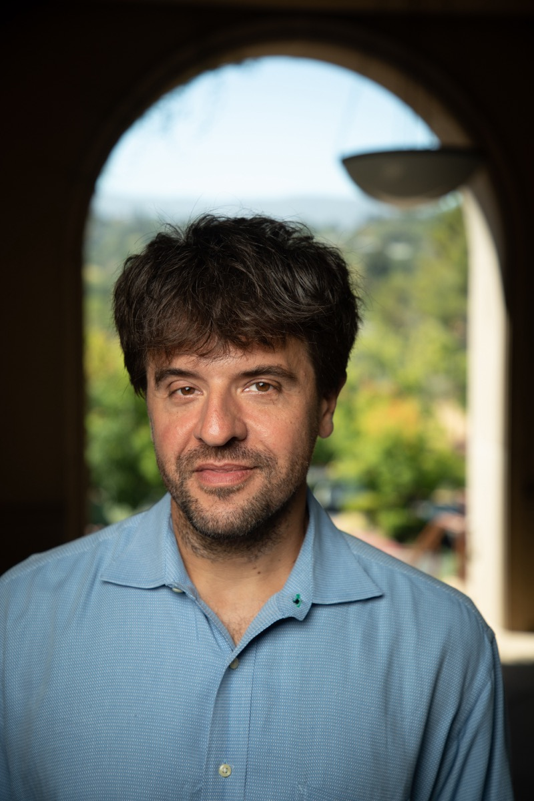
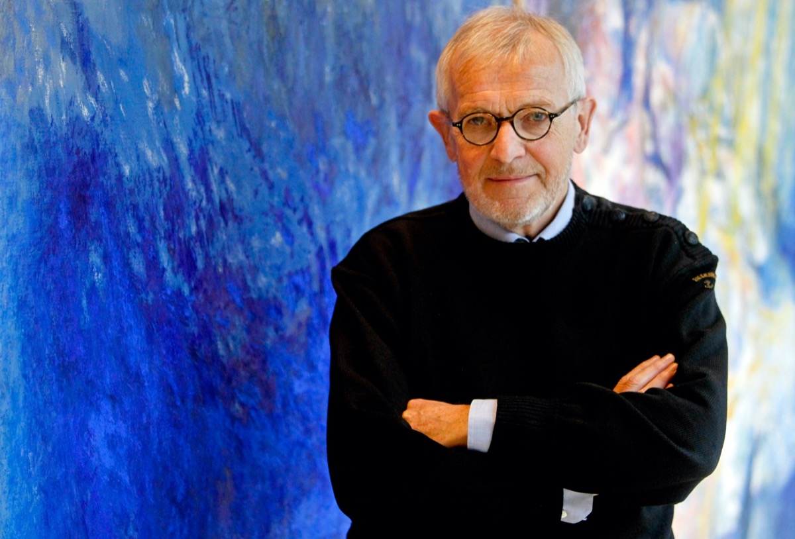
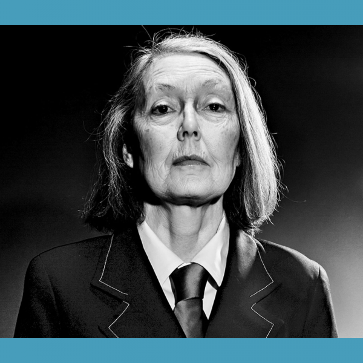
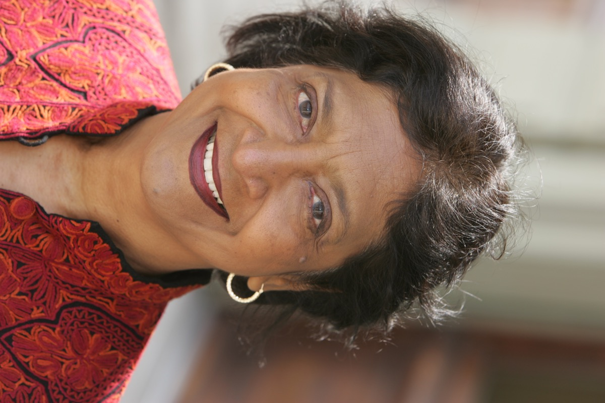

Official announcement
Who won, what was cited, and the committee’s exact framing.
A LIVING ATLAS OF IDEAS
Explore every 2026 Nobel category through recognizable laureate portraits, concise explanations, interactive deep dives, and three-route video review pages.
Explore the awards ↓2026 PRIZE MAP
All six prizes are released. Each card uses a representative laureate portrait for recognition, then opens the official citation, interactive mechanism, complete profiles, and three-route video review.

Karl Deisseroth · Peter Hegemann · Georg Nagel
02 · PHYSICS
Francis Halzen
03 · CHEMISTRYHenri B. Kagan · Kenso Soai
04 · LITERATURE
Anne Carson
05 · PEACE
Navanethem “Navi” Pillay
06 · ECONOMIC SCIENCESRobert E. Hall · Michael Woodford
YT3 REVIEW METHOD
Who won, what was cited, and the committee’s exact framing.
The core mechanism, idea, evidence, or historical context.
The human reasoning, career path, and unanswered questions.
VERSION MANAGEMENT
HOME is the single place for site-wide version management. Every page level now returns here through the same right-side HOME control.
The Peace Prize card now displays Navi Pillay's full portrait without cropping her face or clothing.
Adds the HOME, Award Review Hub and Focused Study hierarchy, with five-station progress, Book and Terms pages, and consistent return navigation for all six awards.
The page title, header and footer use one release timestamp; GI completion always reads the published HOME title.